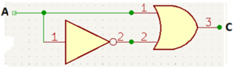

Objetivo. En este ejercicio se van a probar las propiedades Asociativa, Conmutativa y Complemento. Considerando que muchas de las leyes del algebra de alguna manera ya se han estudiado, vamos a utilizar como una de las señales de entrada el reloj, para así ir viendo la función operativa del reloj.
Procedimiento 1.
Ley de complemento,
- Conectar la salida del reloj, entrada A, a uno de los pines de AUX 1.
- Conectar uno de los pines de AUX 1, entrada A, al pin 1 de la compuerta OR del 74LS32.
- Conectar otro de los pines de AUX 1, entrada A, al pin 1 de la compuerta NOT del 74LS04.
- Conectar la salida 2 de la compuerta NOT del 74LS04 al pin 2 de la compuerta OR del 74LS32
- Conectar la salida 3 de la compuerta NOT del 74LS04 al borne de uno de los LEDs, esta es la salida C.
- Ponga el interruptor en ON.
-
Llenar la siguiente tabla de verdad. Saque una conclusión.
NOT 74LS04 OR 74LS32 A
Pin 1A
Pin 1C
Pin 3

Procedimiento 2.
Ley de complemento,
- Conectar la salida del reloj, entrada A, a uno de los pines de AUX 1.
- Conectar uno de los pines de AUX 1, entrada A, al pin 1 de la compuerta AND del 74LS08.
- Conectar otro de los pines de AUX 1, entrada A, al pin 2 de la compuerta OR del 74LS32. Conectar la salida 3 de la compuerta OR del 74LS08 al borne de uno de los LEDs, esta es la salida S.
- Ponga el interruptor en ON.
-
Llenar la siguiente tabla de verdad. Saque una conclusión.
NOT 74LS04 AND 74LS08 A
Pin 1A
Pin 1C
Pin 3